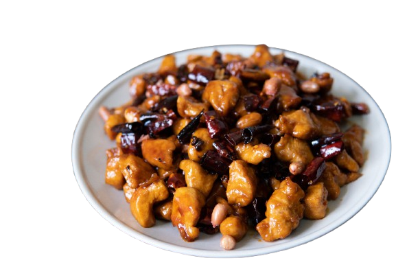
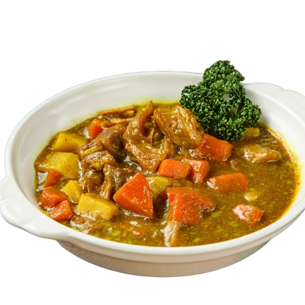
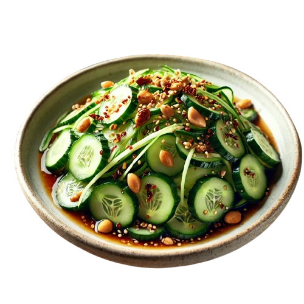

蘋果燒排骨
傳統紅燒排骨的基礎上，因蘋果的加入，注入一股清新果香。

宮保雞丁
雞丁與花生的完美結合，麻辣酸甜的口感層次豐富。
酸菜白肉
酸菜與白肉的酸香鮮美互相融合，暖胃又下飯。

咖哩牛腩
濃郁的咖哩配上嫩滑牛腩，搭配馬鈴薯和胡蘿蔔，口感香濃醇厚。
酸辣水煮牛肉
鮮嫩的牛肉片搭配酸辣湯底，開胃爽口，是宴客和聚會的必備佳餚。

椒鹽排骨
外酥內嫩的排骨，椒鹽香氣濃郁，一口接一口，越吃越上癮。
蜜汁雞翅
甜蜜焦香的雞翅，外層焦糖般的蜜汁風味，口感香甜濃郁，孩子們的最愛。
香滷牛腱
滷製入味的牛腱，肉質緊實且帶有醬香，冷熱皆宜，適合切片當作主菜或小吃。
蒜香炒菠菜
經典的家常小炒，清香的蒜味完美提升菠菜的鮮嫩口感。
紅燒豆腐配小白菜
嫩滑的豆腐配上鮮綠的小白菜，搭配濃郁醬汁，色香味俱全。

蒜香蒸花椰菜
清蒸花椰菜，搭配蒜香醬汁，保留鮮嫩口感與健康原味。

涼拌黃瓜
清爽開胃的黃瓜涼拌菜，酸甜中帶著微辣，夏日必備小菜。
蒜香奶油蝦
金黃酥香的蒜香奶油蝦，搭配檸檬的清爽，讓海鮮更加鮮美。
香烤檸檬鮭魚
外酥內嫩的鮭魚搭配檸檬香草，健康又美味。
白酒蒸淡菜
淡菜與白酒的完美結合，鮮香濃郁，適合聚餐分享。
清炒魷魚
魷魚的鮮嫩搭配青豆與辣椒，清爽又帶點微辣風味。